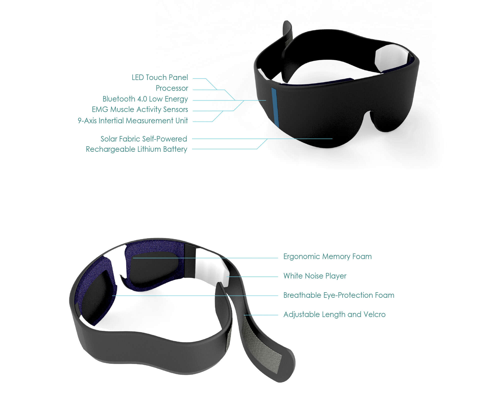

Why
DO WE NEED SLEEP?
The average person spends 1/3 of his or her life asleep

Restorative Theory
Muscle growth, tissue repair, protein synthesis only occur when we sleep.
Brain Plasticity Theory
Sleep is correlated to changes in the structure and organization of the brain, the process by which the brain is able to learn and remember, acquisition, consolidation and recall. Consolidation is the process by which memories become stable.
How
DO WE SLEEP?
3 Stages of NREM
N1 is lightest stage of sleep and lasts between 1-7 minutes; N2 lasts 10-25 minutes;
N3 is deep sleep lasts 20-40 minutes
REM Sleep Is The 4th stage
“Active sleep”, dream state
NREM&REM Sleep Alternate In Cyclic Pattern
Different sleep stages determine the consolidation of different types of memories.
Loss of sleep or poor quality sleep reduces the one’s ability to learn.

What
IS THE PROBLEM?
Light Disturbance
Effects our internal clock

Noise Disturbance
Noise effects people differently.
Most prefer quiet, soothing
or familiar sounds
Emotional Disturbance
Stress and anxiety are the
biggest culprit
Who
IS THE TARGET AUDIENCE?
Target Demographic
The millions of people from all walks of life who feel the effects of sleep loss, from executives who constantly travel across multiple time zones to organic farmers who must get up extra early to harvest new crops. For anyone who wants to be a healthier and more productive person.
What
IS THE SOLUTION?
Create a intelligent, sustainable device that influences user’s visual and audio response. A convenient and sustainable device that will allow users to improve their sleep quality.
Nap-Q
INTELLIGENT SLEEP MONITOR
Main Features
Blocks Light
Structured ocular support for optimal comfort
Blocks Sound
White noise player is able to seamlessly drown out background environmental sounds
Integrated Sleep Monitoring
Intelligent tracking application that detects the quality of the users sleep
Smart Alarm
Integration with sleep monitoring to detect optimal time for wakeup
Self-Powered
Solar powered for convenience and environmental concerns
Asian-Specific Fit
Shaped with quantitative ergononic analysis of asian facial contour
Nap-Q APP
The App is designed for user who wants to keep long-term track of his/her sleep pattern. Data will be automatically synced to the smart phone through Bluetooth. There is a LED touch panel on the eye mask, which provides user simple function setups. More detailed settings are available in the App.
The sleep log page will show data record for every monitored night. The content includes the sleep time, eye movement pattern as well as body movement pattern. Through the sliding bar located at the bottom, user is able to get access to specific date that he/she want to check. Writing notes, sharing functions are also provided.
Nap-Q
Category:
Research & Conceptual Design Project
Wearable Product/Interaction Design
Date:
Oct - Dec 2013
Nap-Q is an intelligent sleep mask that people can use during their night sleep, daytime short nap and travelling nap on the transportation. The product enables users to enjoy more comfortable sleep even when the sleeping circumstance is not ideal enough.
Nap-Q senses eye movement and body motion to seamlessly interpret your sleep status and process the information to monitor your sleep. With 2 advanced EMG sensors and a nine-axis IMU, iMask has been engineered to recognize the sleep pattern.
Project Team: Ankita SINHA | Elaine ZHONG | Michelle MA | Quincey L. DONG
Advisor: Dr. Eli Blevis, Associate Professor, School of Informatics and Computing, IU